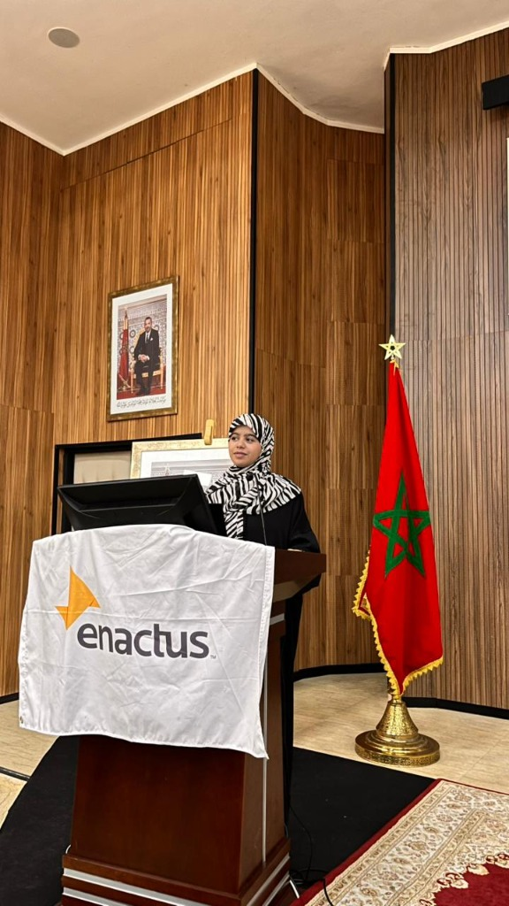
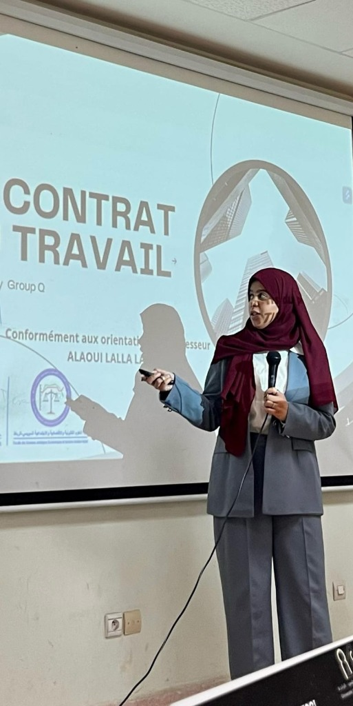

Janat Elkouraichi
Actions Publiques, Ingénierie Financière & Modernisation Digitale
Étudiante en Master Management des Actions Publiques et Ingénierie Financière Publique à l'UM5-FSJES Agdal. Forte d'une expérience à la Trésorerie Générale du Royaume et d'une double compétence en marketing digital, IA et communication, je souhaite contribuer aux travaux administratifs et législatifs du Parlement du Royaume du Maroc.

Profil Professionnel
Étudiante en Master Management des Actions Publiques et Ingénierie Financière Publique. Forte d'une expérience à la Trésorerie Générale du Royaume (TGR) et d'une double compétence en marketing digital, IA et communication. Je souhaite apporter mes compétences en analyse financière publique et en modernisation digitale au service des travaux administratifs et législatifs du Parlement du Royaume du Maroc.
Finance publique
Contrôle réglementaire, traitement des dossiers financiers et analyse des flux publics.
Modernisation digitale
Approche orientée données, projet digital et transformation des services publics.
Leadership
Déléguée de promotion, chef de projet et membre actif de projets à impact social.


Expériences Professionnelles
Head of Marketing & Media
ALIC — Rabat, Maroc
- Direction de la stratégie de communication multicanale et suivi des indicateurs de performance (KPIs).
- Supervision et encadrement d'une équipe pluridisciplinaire de 4 personnes.
- Optimisation des canaux de communication pour améliorer la visibilité et la performance de la marque.
Développeuse Vibe Coding / Creator AI
PACTFORMS.COM — Rabat, Maroc
- Conception d'une plateforme LMS et intégration d'outils d'IA (Ready AI, Google Antigravity).
- Développement de solutions digitales innovantes et centrées sur l'expérience utilisateur.
- Participation à la conception, à l'architecture et au déploiement du produit.
Stage Pratique
Cabinet d'Expertise Comptable — Rabat, Maroc
- Gestion autonome de la saisie comptable de 15 dossiers clients sur SAGE et CIEL.
- Déclarations fiscales (TVA) et sociales (Paie, CNSS, IGR) en conformité avec la réglementation marocaine.
Stage Pratique
Trésorerie Générale du Royaume (TGR) — Rabat, Maroc
- Contrôle et vérification réglementaire de plus de 100 dossiers de comptes de dépôts (CDAV/CDAT).
- Traitement des incidents financiers et gestion des Avis à Tiers Détenteur (ATD).
- Analyse des flux financiers ayant permis une réduction de 15 % des délais de traitement.
Formation
Master Management des Actions Publiques & Ingénierie Financière Publique
UM5 - FSJES Agdal, Rabat
Finances Publiques, Droit Parlementaire, Évaluation des Politiques Publiques, Contrôle de Gestion Public.
Licence en Marketing et Transformation Digitale
UM5 - FSJES Souissi, Rabat
Stratégie marketing, transformation digitale, gestion de projets, CMS et community management.
Certifications
- AI Fundamentals (2026) — Google
- Gestion de Projets Digitaux (2026) — GOLDEV
- Advertising with Meta (2026) — Meta
- SEO Essentials (2025) — Semrush
- Environment & Gender (2023) — UNICEF
Compétences clés
Compétences
Langues
Centres d'intérêt
Contact
Contactez-moi
Je suis toujours ouverte à de nouvelles opportunités passionnantes.